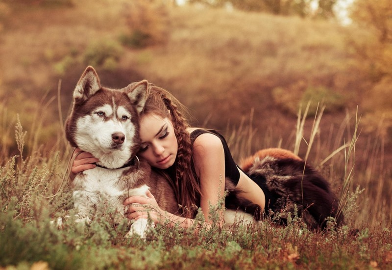
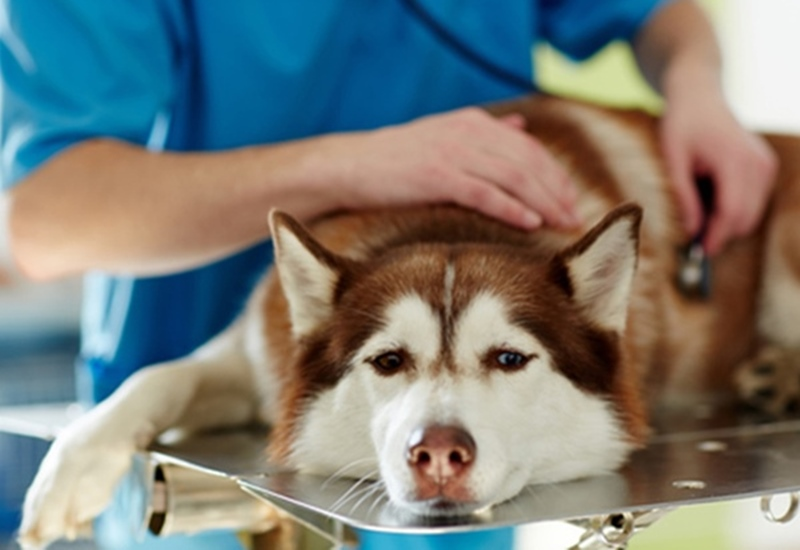

Husky là giống chó ít khi mắc bệnh. Nhưng cũng không tránh khỏi một số vấn đề sức khoẻ thường gặp. Bạn cần trang bị tốt kiến thức để giữ cho chú chó của mình luôn khoẻ mạnh.

Bệnh về đường tiêu hoá
Husky bị mắc bệnh thường do ăn phải thức ăn hay nước uống bị ôi thiu hoặc nhiễm độc. Cũng có thể cún bị bỏ đói quá lâu hay ăn quá no dẫn đến quá tải trong vấn đề tiêu hoá.Thời gian phát bệnh ở Husky thường từ 2 đến 5 ngày. Cún sẽ có biểu hiện nằm một chỗ, khó chịu vùng bụng, phân và nước tiểu bị lẫn tạp chất. Bạn cần cho cún ngừng ăn trong 24 giờ để theo dõi. Sau đó, bổ sung các món an toàn như canh rau, cháo để cún dễ tiêu hoá. Tham khảo ý kiến bác sĩ và cho cún uống thuốc phù hợp.
Bạn có thể phòng bệnh đường tiêu hoá cho cún bằng cách cho ăn đủ và đúng bữa. Thức ăn, nước uống đều phải sạch sẽ, nấu chín từ nguyên liệu tươi ngon. Cân bằng dinh dưỡng bởi những món ăn lành mạnh, phù hợp với từng giai đoạn và thể trạng của Husky.
Bệnh loạn sản xương hông
Bệnh có thể nhận thấy rõ ràng trong khoảng 2 năm đầu đời của Husky. Các khớp nối trong và khớp ngoài của cún mắc bệnh sẽ phát triển không bình thường. Tình trạng này gây ra đau đớn, viêm, lệch khớp, trật khớp… làm cún khó khăn trong việc di chuyển. Nếu kéo dài bệnh có thể gây thoái hoá, thoát vị đĩa đệm.
Đây là bệnh di truyền nên bạn cần tìm hiểu kỹ trước khi chọn mua Husky. Để chắc chắn thì bạn có thể tiến hành làm xét nghiệm xem loạn sản này có trong máu của cún không.
Các bệnh về mắt
Ba vấn đề phổ biến nhất ở mắt Husky là: đục thủy tinh thể, loạn dưỡng giác mạc và teo võng mạc tiến triển.
Đục thủy tinh thể: Hiện tượng mờ đục xuất hiện ở mắt Husky bởi tuổi tác hoặc yếu tố di truyền. Bệnh này để nặng có thể sẽ dẫn đến mù. Trường hợp nhẹ có thể điều trị bằng thuốc nhỏ bác sĩ thú y chỉ định. Nếu bệnh tiến triển phức tạp hơn thì cần đưa cún đi khám và làm phẫu thuật kịp thời.

Loạn dưỡng giác mạc: Chứng bệnh này thường xuất hiện ở Husky khoảng bốn tuổi. Dị khoáng chất trắng đục bị đọng trong giác mạc cún gây loạn dưỡng giác mạc. Bệnh ít gây ảnh hưởng đến tầm nhìn và cũng không khiến cún bị mù. Nhưng bạn nên theo dõi tình trạng bệnh để có phương pháp chữa trị phù hợp.

Teo võng mạc tiến triển: Đây là vấn đề nghiêm trọng hơn về mắt của Husky. Bệnh này là do di truyền, gây ảnh hưởng đến các thụ thể ánh sáng trên võng mạc mắt. Nếu không được điều trị kịp thời, cún có thể bị mù. Nếu phát hiện bệnh, bạn cần sớm đưa cún đến cơ sở y tế để kiểm tra.